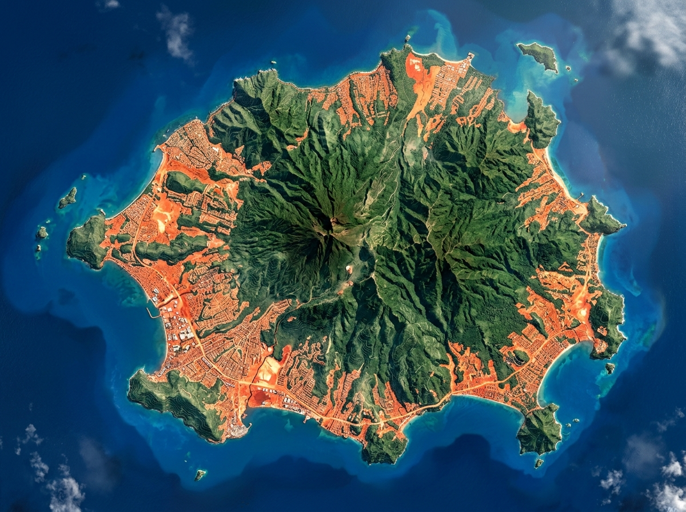
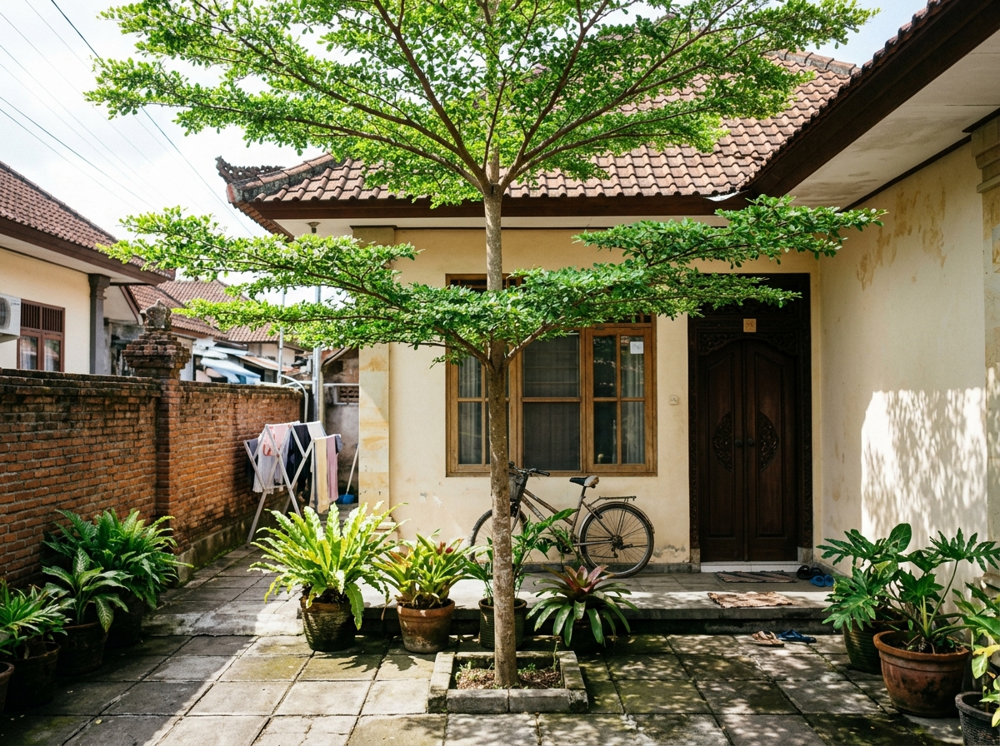
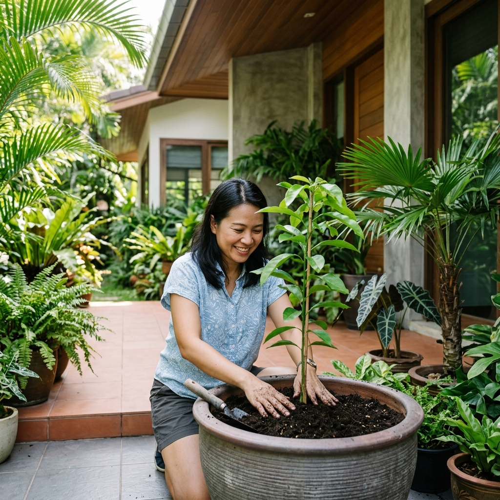
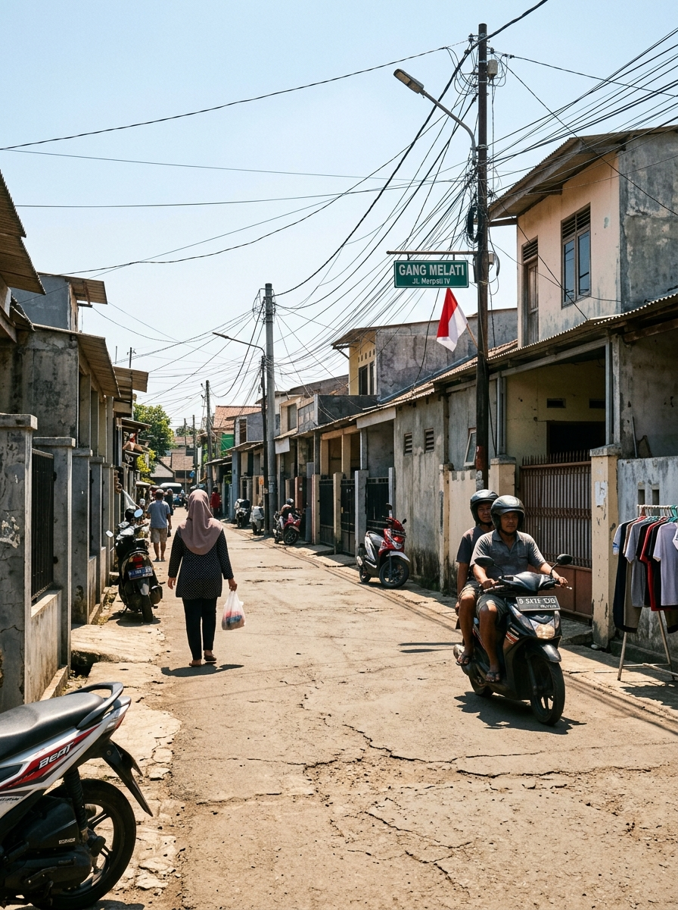
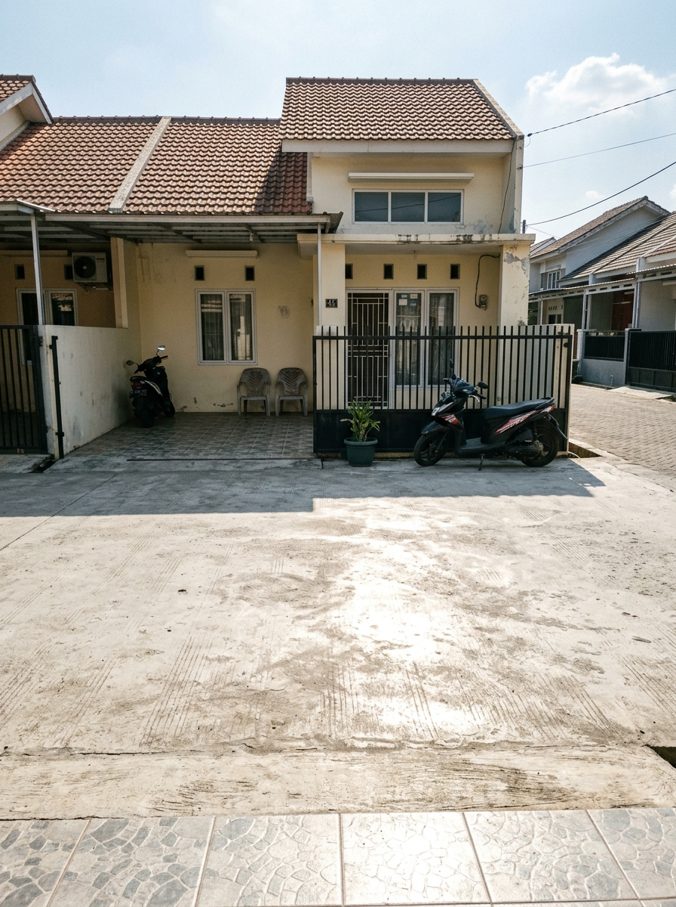
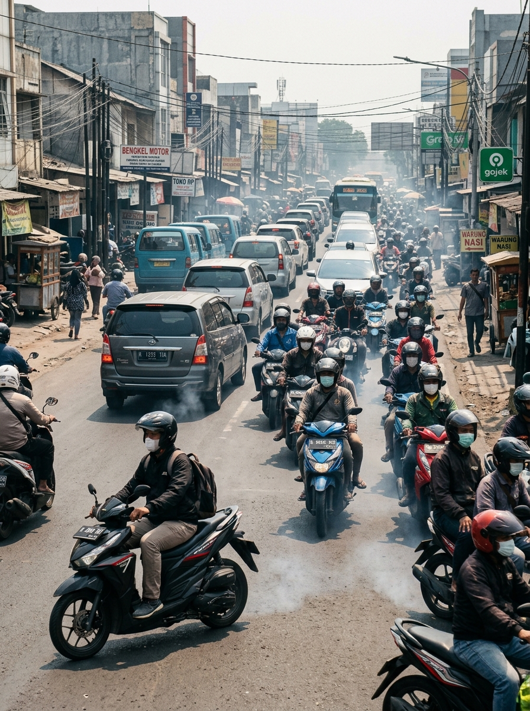
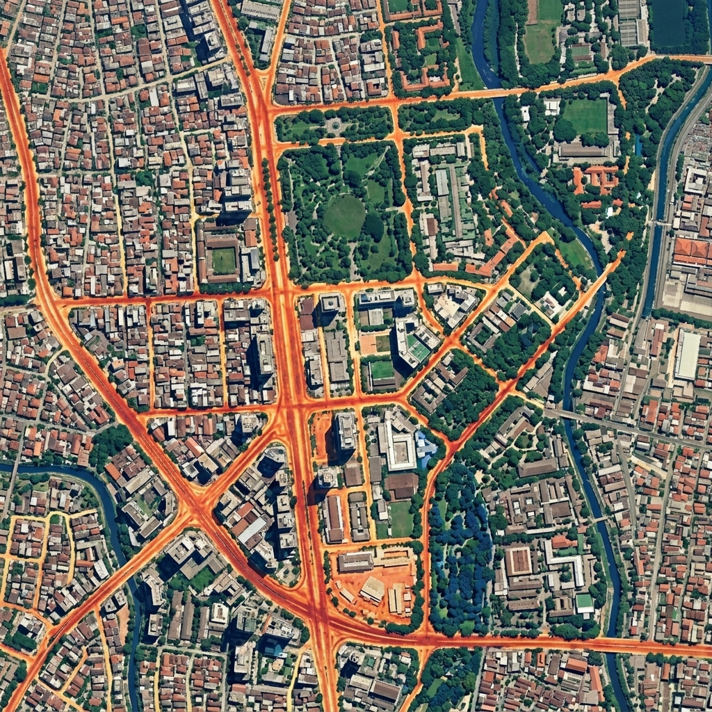

Dulu teras depan panasnya bisa tembus 38 derajat di siang hari. Setelah melihat peta Teduh dan menanam pohon Tanjung yang berdaun lebat, area teras jadi sangat teduh dan nyaman untuk beraktivitas.
Wujudkan Kawasan
yang
Sejuk,
Bebas dari Gerah.
#1
Platform Suhu Kawasan
Cari tahu seberapa panas lingkungan sekitar Anda, temukan titik yang minim pepohonan, dan dapatkan rekomendasi pohon dari Teduh agar halaman dan jalanan rumah jadi lebih sejuk.



Tentang Kami
Bantu Warga Bikin Lingkungan Rumah Lebih Sejuk
Teduh membantu warga mengetahui kondisi suhu di sekitar tempat tinggal, memilih pohon yang aman ditanam dekat rumah, serta menukarkan poin aksi tanam dengan berbagai voucher dan bibit.
Pantau Suhu di Sekitar Tempat Tinggal
Cek suhu jalanan dan area sekitar rumah Anda lewat peta satelit untuk melihat lokasi mana yang paling butuh peneduh.
Pilih Pohon yang Aman untuk Rumah
Temukan rekomendasi pohon berakar dalam yang tidak merusak fondasi bangunan, lantai teras, atau saluran air.
Tukar Poin dengan Voucher dan Hadiah
Kumpulkan poin dari setiap pohon yang Anda tanam dan rawat, lalu tukarkan dengan bibit, kompos, atau voucher belanja mitra.
Kenapa Lingkungan Sekitar
Makin Hari Makin Panas?
Kurangnya Tanaman & Pohon di Sekitar Rumah
Jarang ada pepohonan di pinggir jalan dan halaman rumah, sehingga sinar matahari langsung menyengat tanpa ada peneduh alami.
Lahan Terbuka Dipenuhi Bangunan & Semen
Sebagian besar tanah sudah tertutup semen dan deretan bangunan, membuat panas terperangkap hingga suhu lingkungan tembus 39.4°C.
Polusi Kendaraan & Udara Kering
Kemacetan dan asap knalpot membuat udara makin kotor, kering, dan pengap, menambah rasa gerah saat beraktivitas di luar rumah.
Minimnya Data Suhu & Panduan Tanam
Banyak warga ingin menanam pohon tetapi bingung memilih bibit yang aman untuk fondasi rumah dan tidak menyumbat saluran pipa got.




Langkah Mudah Bikin
Kawasan Lebih Sejuk

1. Cek Titik Panas di Peta
Lihat peta satelit untuk mengecek bagian mana di lingkungan Anda yang paling terik dan butuh pohon penghijauan.
2. Rekomendasi Pohon dari Teduh
Daftar bibit pohon berdaun lebat yang akarnya aman dari fondasi rumah dan tidak merusak saluran pipa got.
3. Perkiraan Penurunan Suhu
Ketahui perkiraan seberapa sejuk suhu lingkungan Anda setelah pepohonan mulai tumbuh menaungi kawasan.
4. Panduan Jarak Tanam Aman
Panduan mudah menentukan jarak tanam yang pas dari dinding rumah dan kabel jalanan agar pohon tumbuh rapi.
Cerita Warga yang
Kawasannya Jadi Lebih Sejuk
Kolaborasi Bersama
Komunitas & Mitra Lingkungan
Bersinergi bersama berbagai instansi, komunitas hijau, dan penggerak lingkungan untuk mewujudkan kawasan yang lebih sejuk dan nyaman.
Pertanyaan yang
Sering Ditanyakan

01
Bagaimana cara Teduh memetakan suhu di suatu kawasan?
Teduh mengolah data tutupan lahan dan citra satelit suhu untuk memetakan titik panas di permukaan aspal, atap, dan tanah terbuka, lalu membandingkannya dengan area yang banyak pepohonan.
02
Mengapa pohon peneduh sangat efektif menurunkan suhu lingkungan?
Tajuk pohon menahan sinar matahari langsung agar tidak memanaskan jalan dan bangunan, sekaligus melepaskan uap air secara alami yang membuat udara sekitar jadi lebih sejuk.
03
Apakah jenis pohon yang direkomendasikan ramah lingkungan dan aman?
Ya. Semua jenis bibit pohon pilihan di katalog Teduh seperti Tanjung, Ketapang Kencana, dan Tabebuia dipilih karena tahan panas matahari, berdaun lebat, dan memiliki akar yang aman bagi fondasi rumah.
04
Berapa jarak tanam yang dianjurkan dari dinding bangunan?
Kami menganjurkan jarak minimal 1.5 meter untuk pohon bertajuk sedang, dan 2.5 hingga 3 meter untuk pohon dengan tajuk lebar agar cabang dan akar tumbuh leluasa tanpa mengganggu bangunan.
05
Apakah fitur peta dan panduan di Teduh dapat diakses secara gratis?
Ya, seluruh fitur pemetaan suhu wilayah, simulasi penyejukan, dan rekomendasi pohon dari Teduh dapat diakses dan dimanfaatkan secara gratis oleh seluruh warga.
Siap Mewujudkan Kawasan
yang Lebih Sejuk?


+
Pindai suhu panas di lingkungan sekitar Anda dan temukan rekomendasi pohon yang pas dari Teduh agar kawasan hunian jadi lebih sejuk, asri, dan nyaman.